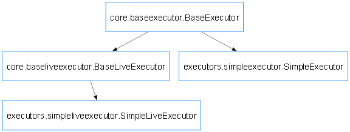

nukebridge.executors package
Inheritance Diagrams

Subpackages
nukebridge.executors.simpleexecutor module
- class nukebridge.executors.simpleexecutor.SimpleExecutor[source]
Bases:
BaseExecutorSimpleExecutor is a class that inherits from the BaseExecutor class. It is used to execute simple tasks.
nukebridge.executors.simpleliveexecutor module
- class nukebridge.executors.simpleliveexecutor.SimpleLiveExecutor[source]
Bases:
BaseLiveExecutorSimpleLiveExecutor is a class that inherits from the BaseLiveExecutor class. It is used to execute simple live tasks.